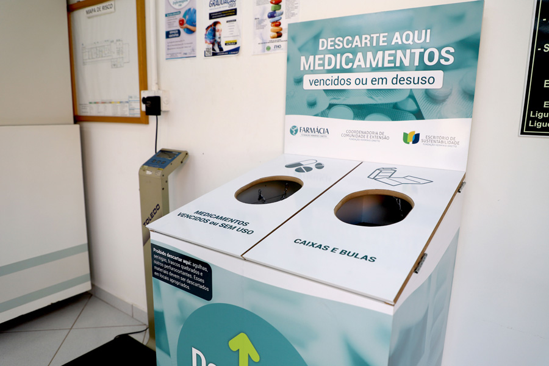

Saiba como descartar medicamentos de forma correta e proteger o meio ambiente e a saúde pública.
Saiba maisPequeno gesto, grande impacto: Descarte certo,
proteja vidas!
Evita a contaminação do solo
Protege a saúde pública
Combate o descarte irregular
Quando jogamos remédios vencidos no lixo comum ou no vaso sanitário, eles podem contaminar o solo, os rios e até a água que bebemos. Mesmo em pequenas quantidades, os componentes dos medicamentos podem afetar plantas, animais e pessoas, além de contribuir para a resistência de bactérias a antibióticos.
Além do impacto ambiental, o descarte incorreto também traz riscos dentro de casa. Medicamentos esquecidos em gavetas e caixas podem ser usados de forma acidental por crianças, idosos ou animais de estimação, resultando em intoxicações graves. Há ainda o perigo do uso indevido de medicamentos guardados por muito tempo, seja por automedicação ou por consumo inadequado, que pode colocar vidas em risco.
Facilita o descarte correto de medicamentos vencidos ou sem uso.
O que queremos resolver
Ajudar as pessoas a descartar medicamentos de forma correta e prática, protegendo a saúde e o meio ambiente ao mesmo tempo.
O futuro que nós imaginamos
Um mundo onde ninguém mais jogue remédios no lixo comum, porque todos sabem o impacto disso — e têm acesso fácil a pontos de descarte confiáveis.
O que nos move
Ajudar as pessoas a descartar medicamentos de forma correta e prática, protegendo a saúde e o meio ambiente ao mesmo tempo.
Descubra onde descartar com segurança. Clique abaixo para ver o mapa completo.
Clique no botão abaixo para acessar a página com o mapa completo e encontrar os pontos de coleta mais próximos da sua região.